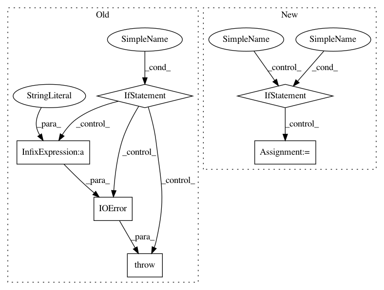

76835dc05631f148be28068b3675bc60c9797325,src/python/pants/base/build_file.py,BuildFile,__init__,#BuildFile#Any#Any#Any#,36
Before Change
if not BuildFile._is_buildfile_name(os.path.basename(buildfile)):
raise IOError("%s is not a BUILD file" % buildfile)
if not os.path.exists(buildfile):
raise IOError("BUILD file does not exist at: %s" % buildfile)
self.root_dir = os.path.realpath(root_dir)
self.full_path = os.path.realpath(buildfile)
self.name = os.path.basename(self.full_path)
After Change
raise IOError("Path to BUILD file does not exist at: %s" % os.path.dirname(buildfile))
// There is no BUILD file without a prefix so select any viable sibling
if not os.path.exists(buildfile):
for build in BuildFile._get_all_build_files(os.path.dirname(buildfile)):
self._build_basename = build
buildfile = os.path.join(path, self._build_basename)
break
if must_exist:
if not os.path.exists(buildfile):
raise IOError("BUILD file does not exist at: %s" % buildfile)
In pattern: SUPERPATTERN
Frequency: 3
Non-data size: 6
Instances
Project Name: pantsbuild/pants
Commit Name: 76835dc05631f148be28068b3675bc60c9797325
Time: 2014-05-21
Author: zundel@squareup.com
File Name: src/python/pants/base/build_file.py
Class Name: BuildFile
Method Name: __init__
Project Name: hachmannlab/chemml
Commit Name: 1672b5a9a47b081aa3e61c9f2ca76fae26ed8730
Time: 2017-11-12
Author: mojtabah@buffalo.edu
File Name: cheml/wrappers/cheml_cml/cheml_wrapper.py
Class Name: DistanceMatrix
Method Name: fit
Project Name: probcomp/bayeslite
Commit Name: 6bc3dcda738601be9741a26ef8fa6429d78d644a
Time: 2015-02-20
Author: riastradh+probcomp@csail.mit.edu
File Name: src/schema.py
Class Name:
Method Name: bayesdb_install_schema